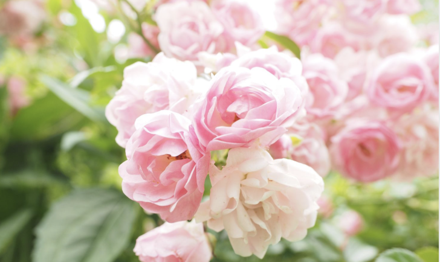

Flower Video
Here is a YouTube video about beautiful flowers and gardens:
Flower Video
Here is a YouTube video about flowers:
Interactive Tableau Graph
This is a live Tableau visualization embedded directly into the page.

I also created a small interactive web app for this project.
Open My Mood to Flower PickerFlowers bring color, fragrance, and personality to the world. This page shares a few of my favorites and why I love them.
Flowers are one of my favorite parts of nature because each kind has its own look, meaning, and season. Some are bright and cheerful, while others are elegant and calming. I especially love flowers that add beauty to gardens, bouquets, and outdoor spaces.

This beautiful rose garden shows why flowers are so inspiring. They can completely transform a space.
Roses are often associated with love, sunflowers symbolize happiness and positivity, and tulips are a classic sign of spring. I like flowers not only for how they look, but also for the feelings and meanings people connect to them.
Here is a YouTube video about beautiful flowers and gardens:
Here is a YouTube video about flowers:
This is a live Tableau visualization embedded directly into the page.